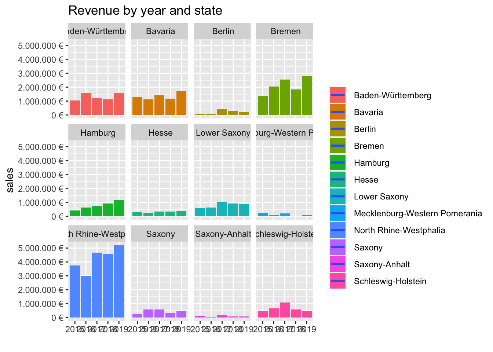
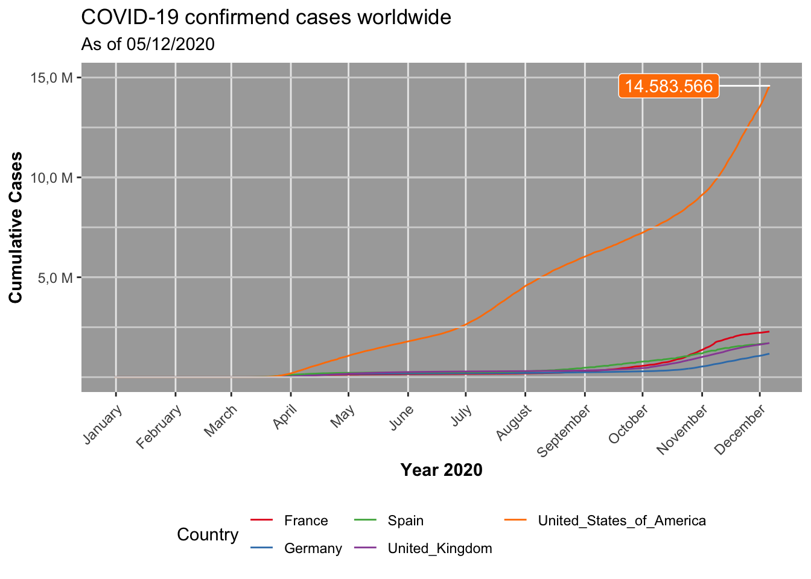
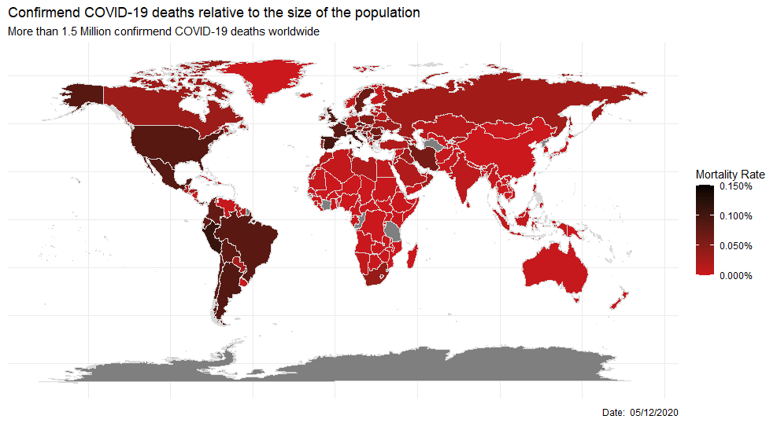

Journal (reproducible report)
Philip Salmang
06 December 2020
1 Intro to tidyverse
Last compiled: 2020-12-06
\(~\)
The goal of this introduction was to give a rough overview on how data can be transformed and visualized. Therefore, packages, pipes, tibbles and basic transformation functions were taught.
1.1 Challenge 1: Sales Analysis
library(tidyverse)
library(lubridate)
library(readxl)
# 1.0 Load and wrangle Data from excel -------------------------------------
# 1.1 import the data ----
bikes_tbl <- read_excel("/Users/philipsalmang/Documents/R/Business Data Science Basics/DS_101/00_data/01_bike_sales/01_raw_data/bikes.xlsx")
orderlines_tbl <- read_excel("/Users/philipsalmang/Documents/R/Business Data Science Basics/DS_101/00_data/01_bike_sales/01_raw_data/orderlines.xlsx")
bikeshops_tbl <- read_excel("/Users/philipsalmang/Documents/R/Business Data Science Basics/DS_101/00_data/01_bike_sales/01_raw_data/bikeshops.xlsx")
# 1.2 Joining Data ----
bike_orderlines_joined_tbl <- orderlines_tbl %>%
left_join(bikes_tbl, by = c("product.id" = "bike.id")) %>%
left_join(bikeshops_tbl, by = c("customer.id" = "bikeshop.id"))
# 1.3 Wrangling Data ----
bike_orderlines_wrangled_tbl <- bike_orderlines_joined_tbl %>%
separate(col = location,
into = c("city", "state"),
sep = ",") %>%
separate(col = order.date,
into = c("order.year"),
sep = "-") %>%
mutate(total_price = quantity*price)
sales_by_state <- bike_orderlines_wrangled_tbl%>% group_by(state) %>%
summarize(sales = sum(total_price)) %>%
mutate(sales_euro = scales::dollar(sales, big.mark = ".",
decimal.mark = ",",
prefix = "",
suffix = "€ "))
# 2.0 Plots ------------------------------------------
# 2.1 Bar Plot: Revenue by state ----
sales_by_state_plt <-sales_by_state %>% ggplot(aes(x = state, y = sales)) +
geom_col(fill = "#2DC6D6") +
labs(title = "Revenue by State",
x = "",
y = "Revenue") +
geom_label(aes(label = sales_euro),size=2) + # Adding labels to the bars
scale_y_continuous(labels = scales::dollar_format(big.mark = ".",
decimal.mark = ",",
prefix = "",
suffix = "€")) +
theme(axis.text.x = element_text(angle = 45, hjust = 1))
show(sales_by_state_plt)
# 2.2 Facet Plot: Analyze by year for each state ----
sales_by_state_year <- bike_orderlines_wrangled_tbl %>% group_by(order.year, state) %>%
summarize(sales = sum(total_price))
sales_by_state_year_plt <- sales_by_state_year %>%
# Set up x, y, fill
ggplot(aes(x = order.year, y = sales, fill = state)) +
# Geometries
geom_col() + # Run up to here to get a stacked bar plot
# Adding the trend
geom_smooth(method = "lm", se = FALSE) + # Adding a trendline
# Facet
facet_wrap(~state) +
# Formatting
scale_y_continuous(labels = scales::dollar_format(big.mark = ".",
decimal.mark = ",",
prefix = "",
suffix = " €")) +
# Add Title
labs(
title = "Revenue by year and state",
x = "",
fill = "" # Changes the legend name
)
show(sales_by_state_year_plt)The goal of the Challenge is to visualize the Revenue of each given state, here 12 in total. The first plot will visualize the revenue of each state in a bar plot. In the second part, 12 facet plots will be used to visualize each states revenue by year. The facet plots are helpful in order to visualize not only the revenue within each state, but a comparison between the states is also easily done.
1.1.1 Bar Plot: Revenue by State

1.1.2 Revenue Analysis from 2015 to 2019 by State

2 Data Acquisition
Last compiled: 2020-12-06
\(~\)
In this Chapter we learned how to acquire large amount of data either via an API or via web scrapping. Both data acquisition methods were used in the following challenges
2.1 Challenge 1: Data Acquisition via API- Possible Destinations from Frankfurt Airport
library(httr)
library(tidyverse)
library(jsonlite) # converts JSON files to R objects
# 1.0 read API URL and get Data---------------------------------
url <- "https://aerodatabox.p.rapidapi.com/airports/icao/EDDF/stats/routes/daily"
response <- VERB("GET", url, add_headers("X-RapidAPI-Key" = '39a799b910msha3a1393a9c2d30bp1fbef4jsne313ffa56616', "X-RapidAPI-Host" = 'aerodatabox.p.rapidapi.com', ''), content_type("application/octet-stream"))
# 2.0 Convert resonse to readable data in tables -------------------
beginning <- response %>%
.$content %>%
rawToChar() %>%
fromJSON()
# 2.1 Retrieve possible destinations
daily_flights <- response %>%
.$content %>%
rawToChar() %>%
fromJSON() %>%
.$routes %>%
.$destination %>%
select(-c("location","shortName")) %>%
rename("City" = municipalityName) %>%
slice(1:10)
write_rds(daily_flights, "daily_flights.rds")The API used in this challenge was the aerodatabox api. In order to make a more manageable plot, only the first ten destinations were plotted. A passenger traveling from Frankfurt can fly to a total of 144 destinations. There were multiple airlines departing to certain destinations. Unfortunately, I was not able to retrieve the mentioned data in the given time frame.
## icao iata name City countryCode
## 1 EDDM MUC Munich, Munich Munich DE
## 2 LOWW VIE Schwechat, Vienna Vienna AT
## 3 EDDH HAM Hamburg, Hamburg Hamburg DE
## 4 EGLL LHR London Heathrow, London London GB
## 5 EHAM AMS Amsterdam Schiphol, Amsterdam Amsterdam NL
## 6 EDDB BER Berlin Brandenburg, Berlin Berlin DE
## 7 LSZH ZRH Kloten, Zurich Zurich CH
## 8 OMDB DXB Dubai, Dubai Dubai AE
## 9 LDZA ZAG Zagreb, Zagreb Zagreb HR
## 10 EFHK HEL Helsinki Vantaa, Helsinki Helsinki FI2.2 Challenge 2.2: Web Scraping Rosebikes.de
library(tidyverse) # Main Package - Loads dplyr, purrr, etc.
library(rvest) # HTML Hacking & Web Scraping
library(xopen) # Quickly opening URLs
library(jsonlite) # converts JSON files to R objects
library(glue) # concatenate strings
library(stringi) # character string/text processing
# 1.0 Retrieve Data form rosebikes ----
url_home_rose <- "https://www.rosebikes.de"
html_home_rose <- read_html(url_home_rose)
# 2.0 Retrieving urls off categories ----
bike_family_url_tbl <- html_home_rose %>%
html_nodes(css = ".main-navigation-category-with-tiles__item > a") %>%
html_attr("href") %>%
# remove sale category
discard(.p = ~stringr::str_detect(.x,"sale")) %>%
# make a tibble and remove family_class for better overview
enframe(name = "position", value = "family_class") %>%
mutate(bike_url = glue("{url_home_rose}{family_class}")) %>%
subset(select = -family_class)
write_rds(bike_family_url_tbl, "bike_family_url_tbl.rds")
# 3.0 Function to retrieve bike URLS of every single bike model using the Category URLS ---
get_all_urls <- function(bike_main_url){
html_bike_category <- read_html(bike_main_url)
bike_model_url_tbl <- html_bike_category %>%
html_nodes(css = ".row .align-middle > a") %>%
html_attr("href") %>%
enframe(name = "position", value = "bike_model_url")%>%
mutate(bike_model_url = glue("{url_home_rose}{bike_model_url}"))
}
# 3.1 URLs only of families as a vector
bike_family_url_vec <- bike_family_url_tbl %>% pull(bike_url)
# 3.2 Run the function with Family URLs as an argument to get ALL URLs
bike_model_url_lst <- map(bike_family_url_vec, get_all_urls)
bike_model_url_tbl <- bind_rows(bike_model_url_lst)
write_rds(bike_model_url_tbl, "bike_model_url_tbl.rds")
# 4.0 Retrieve ALL prices, Model Names, Families and Models ----
# of individual bike models
get_bike_data <- function(bike_url){
html_bike <- read_html(bike_url)
# Fetch Bike Prices
bike_model_price_tbl <- html_bike %>%
html_nodes(css = ".catalog-category-model__price-current-value") %>%
html_text() %>%
# remove unwanted strings
str_remove_all(pattern = "\n") %>%
str_remove_all(pattern = "\\.") %>%
str_remove_all(pattern = "\\,00") %>%
str_remove_all(pattern = "\\€") %>%
# make tibble
enframe(name = "position", value = "Price_in_Euro")
# make prices numeric
bike_model_price_tbl$Price_in_Euro <- as.numeric(as.character(bike_model_price_tbl$Price_in_Euro))
# save prices table
write_rds(bike_model_price_tbl, "bike_model_price_tbl.rds")
# Fetch Bike Model Names
bike_model_name_tbl <- html_bike %>%
html_nodes(css = ".catalog-category-model__title") %>%
html_text() %>%
# remove unwanted strings
str_remove_all(pattern = "\n") %>%
# make tibble
enframe(name = "position", value = "Name")
# save bike model names
write_rds(bike_model_name_tbl, "bike_model_name_tbl.rds")
# Fetch Bike Family and Models for all bikes
bike_fam_mod_tbl <- html_bike %>%
html_nodes(css = ".catalog-breadcrumb__list-item-link") %>%
html_attr("title") %>%
# make tibble
enframe(name = "position", value = "Category")
# save bike family and models
write_rds(bike_fam_mod_tbl, "bike_fam_mod_tbl.rds")
# Joint Table of bike prices and names
bike_tbl <- bike_model_name_tbl %>%
left_join(bike_model_price_tbl)
# Add Bike Families and Models to bike_table
bike_tbl <- bike_tbl %>%
mutate(Family = bike_fam_mod_tbl$Category[3],
Model = bike_fam_mod_tbl$Category[4]) %>%
select(position, Family, Model, Name, Price_in_Euro)
}
# 4.1 URLs of ALL bikes
bike_model_url_vec <- bike_model_url_tbl %>% pull(bike_model_url)
all_bike_date_lst <- map(bike_model_url_vec,get_bike_data)
all_bike_data_tbl <- bind_rows(all_bike_date_lst) %>% select(-c(1))
# Tibble of all bikes and their prices
write_rds(all_bike_data_tbl, "all_bike_data_tbl.rds")The second way to scrap information is via web scraping. In this instance all the bike model names, and their prices were scraped from rosebikes.de. In order to visualize the process, the data tables will be returned with their first ten rows.
2.2.1 Step 2: Get URLs of the Bike Categories
Step 1 has not been mentioned, since we only read the rosebikes.deURL. In the following bike_categories will be mcalled Family! First, all URL of the individual bike families were scraped.
## # A tibble: 10 x 2
## position bike_url
## <int> <glue>
## 1 1 https://www.rosebikes.de/fahrräder/mtb
## 2 2 https://www.rosebikes.de/fahrräder/rennrad
## 3 3 https://www.rosebikes.de/fahrräder/gravel
## 4 4 https://www.rosebikes.de/fahrräder/cyclocross
## 5 5 https://www.rosebikes.de/fahrräder/fitness
## 6 6 https://www.rosebikes.de/fahrräder/e-bike
## 7 7 https://www.rosebikes.de/fahrräder/trekking
## 8 8 https://www.rosebikes.de/fahrräder/reise
## 9 9 https://www.rosebikes.de/fahrräder/urban
## 10 10 https://www.rosebikes.de/fahrräder/kinder2.2.2 Step 3: Get URLs of every single bike
# 3.0 Function to retrieve bike URLS of every single bike model using the Category URLS ---
get_all_urls <- function(bike_main_url){
html_bike_category <- read_html(bike_main_url)
bike_model_url_tbl <- html_bike_category %>%
html_nodes(css = ".row .align-middle > a") %>%
html_attr("href") %>%
enframe(name = "position", value = "bike_model_url")%>%
mutate(bike_model_url = glue("{url_home_rose}{bike_model_url}"))
}In this step I retrieved the URLs of all bikes. Therefore, I am able to scrap the process of every single bike on this website. Later on, the bikes names will be matched with their specific family and their model. Here as well, only the first ten rows will be shown.
## # A tibble: 33 x 2
## position bike_model_url
## <int> <glue>
## 1 1 https://www.rosebikes.de/fahrräder/mtb/trail-/-enduro/ground-control
## 2 2 https://www.rosebikes.de/fahrräder/mtb/trail-/-enduro/root-miller
## 3 3 https://www.rosebikes.de/fahrräder/mtb/trail-/-enduro/pikes-peak
## 4 4 https://www.rosebikes.de/fahrräder/mtb/dirt/the-bruce
## 5 5 https://www.rosebikes.de/fahrräder/mtb/cross-country/count-solo
## 6 6 https://www.rosebikes.de/fahrräder/mtb/cross-country/psycho-path
## 7 7 https://www.rosebikes.de/fahrräder/mtb/cross-country/thrill-hill
## 8 8 https://www.rosebikes.de/fahrräder/mtb/cross-country/thrill-hill-tr…
## 9 9 https://www.rosebikes.de/fahrräder/mtb/freeride/soul-fire
## 10 1 https://www.rosebikes.de/fahrräder/rennrad/endurance/pro-sl-disc
## # … with 23 more rows2.2.3 Step 4: Get all Prices, Model Names and Families
get_bike_data <- function(bike_url){
html_bike <- read_html(bike_url)
# Fetch Bike Prices
bike_model_price_tbl <- html_bike %>%
html_nodes(css = ".catalog-category-model__price-current-value") %>%
html_text() %>%
# remove unwanted strings
str_remove_all(pattern = "\n") %>%
str_remove_all(pattern = "\\.") %>%
str_remove_all(pattern = "\\,00") %>%
str_remove_all(pattern = "\\€") %>%
# make tibble
enframe(name = "position", value = "Price_in_Euro")
# make prices numeric
bike_model_price_tbl$Price_in_Euro <- as.numeric(as.character(bike_model_price_tbl$Price_in_Euro))
# save prices table
write_rds(bike_model_price_tbl, "bike_model_price_tbl.rds")
# Fetch Bike Model Names
bike_model_name_tbl <- html_bike %>%
html_nodes(css = ".catalog-category-model__title") %>%
html_text() %>%
# remove unwanted strings
str_remove_all(pattern = "\n") %>%
# make tibble
enframe(name = "position", value = "Name")
# save bike model names
write_rds(bike_model_name_tbl, "bike_model_name_tbl.rds")
# Fetch Bike Family and Models for all bikes
bike_fam_mod_tbl <- html_bike %>%
html_nodes(css = ".catalog-breadcrumb__list-item-link") %>%
html_attr("title") %>%
# make tibble
enframe(name = "position", value = "Category")
# save bike family and models
write_rds(bike_fam_mod_tbl, "bike_fam_mod_tbl.rds")
# Joint Table of bike prices and names
bike_tbl <- bike_model_name_tbl %>%
left_join(bike_model_price_tbl)
# Add Bike Families and Models to bike_table
bike_tbl <- bike_tbl %>%
mutate(Family = bike_fam_mod_tbll$Category[3],
Model = bike_fam_mod_tbl$Category[4]) %>%
select(position, Family, Model, Name, Price_in_Euro)
}Here all needed data was retrieved. This process is shown in the get_bike_data function. The Price_in_Euro of each individual bike, their main category Family and they model types Model. In the end all bikes and their specific data were merged in one table called all_bike_data_tbl.
## # A tibble: 104 x 4
## Family Model Name Price_in_Euro
## <chr> <chr> <chr> <dbl>
## 1 MTB Trail / Enduro GROUND CONTROL 1 1699
## 2 MTB Trail / Enduro GROUND CONTROL 2 1999
## 3 MTB Trail / Enduro GROUND CONTROL 3 2599
## 4 MTB Trail / Enduro GROUND CONTROL 4 3299
## 5 MTB Trail / Enduro ROOT MILLER 1 1999
## 6 MTB Trail / Enduro ROOT MILLER 2 2599
## 7 MTB Trail / Enduro ROOT MILLER 3 3399
## 8 MTB Trail / Enduro PIKES PEAK 1 3099
## 9 MTB Trail / Enduro PIKES PEAK 2 3599
## 10 MTB Trail / Enduro PIKES PEAK 3 4299
## # … with 94 more rows3 Data Wrangling
Last compiled: 2020-12-06
library(data.table) # Extension of 'data.frame' for fast manipulation of large Data
library(tidyverse) # Main Package - Loads dplyr, purrr, etc.
library(vroom) # Read and Write Rectangular Text Data Quickly
library(lubridate)
# 1.0 Set up and defining columns that we are interested in ----
# 1.0.1 for files that will be read
col_types <- list(
id = col_character(),
date = col_date("%Y-%m-%d"),
num_claims = col_double())
# 1.0.2 patent_assignee_col_types
patent_assignee_col_types <- list(patent_id = col_character(),
assignee_id = col_character())
# 1.0.3 assignee_col_types
assignee_col_types <- list(id = col_character(),
type = col_character(),
organization = col_character())
# 1.0.4 uspc_tbl
uspc_col_types <- list(patent_id = col_character(),
mainclass_id = col_character() ,
sequence = col_character())
## 1.1 Reading data to create tables
# 1.1.1 Creating patent_tbl
patent_tbl <- vroom(
file = "/Users/philipsalmang/Documents/R/Business Data Science Basics/DS_101/00_data/Patent/raw_data/patent.tsv",
delim = "\t",
col_types = col_types,
na = c("", "NA", "NULL"))
setDT(patent_tbl)
# 1.1.2 Creating patent_assignee_tbl
patent_assignee_tbl <- vroom(
file = "/Users/philipsalmang/Documents/R/Business Data Science Basics/DS_101/00_data/Patent/raw_data/patent_assignee.tsv",
delim = "\t",
col_types = patent_assignee_col_types,
na = c("", "NA", "NULL"))
setDT(patent_assignee_tbl)
# 1.1.3 Creating assignee_tbl
assignee_tbl <- vroom(
file = "/Users/philipsalmang/Documents/R/Business Data Science Basics/DS_101/00_data/Patent/raw_data/assignee.tsv",
delim = "\t",
col_types = assignee_col_types,
na = c("", "NA", "NULL"))
setDT(assignee_tbl)
## 1.1.4 Creating uspc_tbl
uspc_tbl <- vroom(
file = "/Users/philipsalmang/Documents/R/Business Data Science Basics/DS_101/00_data/Patent/raw_data/uspc.tsv",
delim = "\t",
col_types = uspc_col_types,
na = c("", "NA", "NULL")) %>%
# remove column sequence since it is not needed
subset(select = -sequence)
setDT(uspc_tbl)
# make a uspc table with unique combos of patent_id and mainclass_id
uspc_unique_tbl <- uspc_tbl[, .(patent_id, mainclass_id)] %>% unique()
## 1.2 Merge necessary tables for extracting relevant data
# 1.2.1 Merge patent_assignee_tbl and assignee_tbl
patent_assignee_merge_dt <- merge(x = assignee_tbl, y = patent_assignee_tbl,
by.x = "id",
by.y = "assignee_id")
# 1.2.2 Merge patent_assignee_merge_dt and patent_tbl;
# patent_dominance_dt used in Challenge 1 and 2
patent_dominance_dt <- merge(x = patent_assignee_merge_dt, y = patent_tbl,
by.x = "patent_id",
by.y = "id",
all.x = T,
all.y = F)
# Change Date into year, month, day
patent_dominance_dt <- patent_dominance_dt[, .(patent_id,
id,
type,
organization,
year = year(date),
month = month(date),
day = day(date))]
# 1.2.3 Merge patent_dominance_dt and uspc_tbl;
# patent_dominance_innovation_dt only used in Challenge 3
patent_dominance_innovation_dt <- merge(x = uspc_unique_tbl,
y = patent_dominance_dt,
by = "patent_id",
all.x = F,
all.y = T)
## 2.0 Challenge 1, Patent Dominance: What US company / corporation has the most patents? List the ----
# 10 US companies with the most assigned/granted patents.
# include only type = 2,4,6,8,9 since these are US companies, sort by organizations
# and count the number of Patents they have. Omit any N/A values. Sort by
# decreasing order
patent_dominance_US_dt <-
patent_dominance_dt[!is.na(organization)][ # remove any rows containing NA
type %in% c(2,4,6,8,9),.N, by = organization # Filter for US companies and count
][,.(Nr_Patents = N, organization)][ # Rename N
order(Nr_Patents, decreasing = TRUE) # Order Nr_Patents decreasing order
][1:10,] # slice to get first 10 companies
write_rds(patent_dominance_US_dt,"patent_dominance_US_dt.rds")
## 3.0 Challenge 2, Recent patent activity: What US company had the most patents granted in July? ----
# List the top 10 companies with the most new granted patents for July.
# include only type = 2,4,6,8,9 since these are US companies, sort by organizations
# and filter month 7 and count the number of Patents they have.
# Omit any N/A values. Sort by decreasing order
patent_dominance_july_US_dt <-
patent_dominance_dt[
!is.na(organization) # remove any rows containing NA
][month == 7,.(id, type, organization)][ # Filter for month 7
type %in% c(2,4,6,8,9),.N, by = organization # Filter for US companies and count
][,.(Nr_Patents = N, organization)][ # Rename N
order(Nr_Patents,decreasing = TRUE) # Order Nr_Patents decreasing order
][1:10,] # slice to get first 10 companies
write_rds(patent_dominance_july_US_dt,"patent_dominance_july_US_dt.rds")
## 4.0 Challenge 3, Innovation in Tech: What is the most innovative tech sector? ----
# For the top 10 companies (worldwide) with the most patents,
# what are the top 5 USPTO tech main classes?
# 4.1 Extracting Top 10 Organizations with most patents
patent_dominance_world_dt <-
patent_dominance_dt[!is.na(organization)][ # remove any rows containing NA
,.N, by = organization # Count the amount of patents for each company
][,.(Nr_Patents = N, organization)][ # Rename N
order(Nr_Patents,decreasing = TRUE) # Order Nr_Patents decreasing order
][1:10,] # slice to get first 10 companies
# 4.2 Extracting Top 5 mainclass_id of Top 10 Organizations with
# patent_dominance_innovation_dt
top_mainclass <- merge(x = patent_dominance_world_dt,
y = patent_dominance_innovation_dt,
by = "organization") %>%
# Remove unnecessary columns
subset(select = -c(id, type, year, month, day, Nr_Patents))
# Extracting Top 5 mainclasses out of top_mainclass
top_5_mainclass <-
top_mainclass[!is.na(mainclass_id)][ # remove any rows containing NA
,.N, by = mainclass_id # Count the amount of each mainclass_id
][,
.(Nr_mainclass = N, mainclass_id)][ # Rename N
order(Nr_mainclass, decreasing = TRUE) # Order Nr_mainclass decreasing order
][1:5,] # slice to get first 5 mainclass_id
write_rds(top_5_mainclass,"top_5_mainclass.rds")In this chapter, the fundamentals of data wrangling and cleaning were provided. This way a nice and brief overview of large data can be given. A big part of this chapter was the introduction of tibbleswhich were used in all challenges. The entire code is given here in the beginning, but all snippets are also mentioned in the respective steps. Unfortunately, I had to work with the small data set since my laptop was not able to process the large data set. The first code given is the entire code. After that, the code snippets necessary for the respective challenge is given.
3.1 Preparation of Data
library(vroom)
# 1.0 Set up and defining columns that we are interested in ----
# 1.0.1 for files that will be read
col_types <- list(
id = col_character(),
date = col_date("%Y-%m-%d"),
num_claims = col_double())
# 1.0.2 patent_assignee_col_types
patent_assignee_col_types <- list(patent_id = col_character(),
assignee_id = col_character())
# 1.0.3 assignee_col_types
assignee_col_types <- list(id = col_character(),
type = col_character(),
organization = col_character())
# 1.0.4 uspc_tbl
uspc_col_types <- list(patent_id = col_character(),
mainclass_id = col_character() ,
sequence = col_character())
## 1.1 Reading data to create tables
# 1.1.1 Creating patent_tbl
patent_tbl <- vroom(
file = "/Users/philipsalmang/Documents/R/Business Data Science Basics/DS_101/00_data/Patent/raw_data/patent.tsv",
delim = "\t",
col_types = col_types,
na = c("", "NA", "NULL"))
setDT(patent_tbl)
# 1.1.2 Creating patent_assignee_tbl
patent_assignee_tbl <- vroom(
file = "/Users/philipsalmang/Documents/R/Business Data Science Basics/DS_101/00_data/Patent/raw_data/patent_assignee.tsv",
delim = "\t",
col_types = patent_assignee_col_types,
na = c("", "NA", "NULL"))
setDT(patent_assignee_tbl)
# 1.1.3 Creating assignee_tbl
assignee_tbl <- vroom(
file = "/Users/philipsalmang/Documents/R/Business Data Science Basics/DS_101/00_data/Patent/raw_data/assignee.tsv",
delim = "\t",
col_types = assignee_col_types,
na = c("", "NA", "NULL"))
setDT(assignee_tbl)
## 1.1.4 Creating uspc_tbl
uspc_tbl <- vroom(
file = "/Users/philipsalmang/Documents/R/Business Data Science Basics/DS_101/00_data/Patent/raw_data/uspc.tsv",
delim = "\t",
col_types = uspc_col_types,
na = c("", "NA", "NULL")) %>%
# remove column sequence since it is not needed
subset(select = -sequence)
setDT(uspc_tbl)
# make a uspc table with unique combos of patent_id and mainclass_id
uspc_unique_tbl <- uspc_tbl[, .(patent_id, mainclass_id)] %>% unique()
## 1.3 Merge necessary tables for extracting relevant data
# 1.3.1 Merge patent_assignee_tbl and assignee_tbl
patent_assignee_merge_dt <- merge(x = assignee_tbl, y = patent_assignee_tbl,
by.x = "id",
by.y = "assignee_id")
# 1.3.2 Merge patent_assignee_merge_dt and patent_tbl;
# patent_dominance_dt used in Challenge 1 and 2
patent_dominance_dt <- merge(x = patent_assignee_merge_dt, y = patent_tbl,
by.x = "patent_id",
by.y = "id",
all.x = T,
all.y = F)
# Change Date into year, month, day
patent_dominance_dt <- patent_dominance_dt[, .(patent_id,
id,
type,
organization,
year = year(date),
month = month(date),
day = day(date))]
# 1.3.3 Merge patent_dominance_dt and uspc_tbl;
# patent_dominance_innovation_dt only used in Challenge 3
patent_dominance_innovation_dt <- merge(x = uspc_unique_tbl,
y = patent_dominance_dt,
by = "patent_id",
all.x = F,
all.y = T)In this step, all needded data was read into the variables patent_tbl,patent_assignee_tbl,assignee_tbl and uspc_tbl. The Data was wrangled in such a way, that not needed columns were deleted and new tables were created by merging the existings tables. The specific variables needed in the upcoming challenges are mentioned inside the code.
3.2 Challenge 1: Patent Dominance
patent_dominance_US_dt <-
patent_dominance_dt[!is.na(organization)][ # remove any rows containing NA
type %in% c(2,4,6,8,9),.N, by = organization # Filter for US companies and count
][,.(Nr_Patents = N, organization)][ # Rename N
order(Nr_Patents, decreasing = TRUE) # Order Nr_Patents decreasing order
][1:10,] # slice to get first 10 companiesThe challenge was given as follows: “What US company / corporation has the most patents? List the 10 US companies with the most assigned/granted patents.”
The code in itself is explained in the code snippet. The top 10 US company/corporations are listed below.
## Nr_Patents organization
## 1: 7547 International Business Machines Corporation
## 2: 3165 Microsoft Corporation
## 3: 2668 Google Inc.
## 4: 2597 QUALCOMM Incorporated
## 5: 2201 Apple Inc.
## 6: 1873 General Electric Company
## 7: 1638 Hewlett-Packard Development Company, L.P.
## 8: 1625 AT&T INTELLECTUAL PROPERTY I, L.P.
## 9: 1616 Intel Corporation
## 10: 1533 GM Global Technology Operations LLC3.3 Challenge 2: Recent activity
patent_dominance_july_US_dt <-
patent_dominance_dt[
!is.na(organization) # remove any rows containing NA
][month == 7,.(id, type, organization)][ # Filter for month 7
type %in% c(2,4,6,8,9),.N, by = organization # Filter for US companies and count
][,.(Nr_Patents = N, organization)][ # Rename N
order(Nr_Patents,decreasing = TRUE) # Order Nr_Patents decreasing order
][1:10,] # slice to get first 10 companiesThe challenge was given as follows: “What US company had the most patents granted in 2019? List the top 10 companies with the most new granted patents for 2019.”
The code in itself is explained in the code snippet. The top 10 US companies with the most recent activity are listed below.
## Nr_Patents organization
## 1: 772 International Business Machines Corporation
## 2: 315 Microsoft Corporation
## 3: 278 QUALCOMM Incorporated
## 4: 254 Google Inc.
## 5: 219 Apple Inc.
## 6: 187 General Electric Company
## 7: 176 Hewlett-Packard Development Company, L.P.
## 8: 172 Intel Corporation
## 9: 153 AT&T INTELLECTUAL PROPERTY I, L.P.
## 10: 145 GM Global Technology Operations LLC3.4 Challenge 3: Most Innovative Main Classes
patent_dominance_world_dt <-
patent_dominance_dt[!is.na(organization)][ # remove any rows containing NA
,.N, by = organization # Count the amount of patents for each company
][,.(Nr_Patents = N, organization)][ # Rename N
order(Nr_Patents,decreasing = TRUE) # Order Nr_Patents decreasing order
][1:10,] # slice to get first 10 companies
# 4.2 Extracting Top 5 mainclass_id of Top 10 Organizations with
# patent_dominance_innovation_dt
top_mainclass <- merge(x = patent_dominance_world_dt,
y = patent_dominance_innovation_dt,
by = "organization") %>%
# Remove unnecessary columns
subset(select = -c(id, type, year, month, day, Nr_Patents))
# Extracting Top 5 mainclasses out of top_mainclass
top_5_mainclass <-
top_mainclass[!is.na(mainclass_id)][ # remove any rows containing NA
,.N, by = mainclass_id # Count the amount of each mainclass_id
][,
.(Nr_mainclass = N, mainclass_id)][ # Rename N
order(Nr_mainclass, decreasing = TRUE) # Order Nr_mainclass decreasing order
][1:5,] # slice to get first 5 mainclass_idThe challenge was given as follows: “What is the most innovative tech sector? For the top 10 companies (worldwide) with the most patents, what are the top 5 USPTO tech main classes?”
The code in itself is explained in the code snippet. The top 5 mainclasses with are listed below
## Nr_mainclass mainclass_id
## 1: 2790 257
## 2: 2528 370
## 3: 2453 455
## 4: 1981 709
## 5: 1875 3484 Data Visualization
Last compiled: 2020-12-06
\(~\)
In the last chapter we were introduced to the visualization of our prior acquired and wrangled data. We were given up to date Covid-19 data which we plotted in two different ways.
4.1 Challenge 1: Line plot- of COVID-19 cases
library(tidyverse)
library(readr)
library(ggthemes)
library(scales)
library(ggrepel)
library(data.table)
library(lubridate)
library(viridisLite)
library(RColorBrewer)
# 1.0 ----------------------------------------------
# read covid data
covid_data_dt <- read_csv("https://opendata.ecdc.europa.eu/covid19/casedistribution/csv")
# 2.0 Wrangle Data ----------------------------------------------
# 2.1 Select appropriate columns
covid_cases <- covid_data_dt %>%
select(c(1:5,"countriesAndTerritories")) %>%
rename("country" = "countriesAndTerritories")
# 2.2 filter for countries
covid_cases_countries <- covid_cases %>%
filter(country %in% c("France","Germany","Spain","United_Kingdom","United_States_of_America"))
# 2.3 Cumulate Cases
covid_cumCases_countries <- covid_cases_countries %>%
# add smart date column & order
mutate(date = str_glue("{year}-{month}-{day}") %>% as.Date()) %>%
arrange(date) %>%
# Cumulate Cases
group_by(country) %>%
mutate(cumCases = cumsum(cases)) %>%
ungroup() %>%
# Label text
mutate(cumCases_text = scales::dollar(cumCases, big.mark = ".",
decimal.mark = ",",
prefix = "",
suffix = ""))
covid_data_cum_dt <- covid_cases_countries %>%
# add smart date column & order
mutate(date = str_glue("{year}-{month}-{day}") %>% as.Date()) %>%
arrange(date) %>%
# Cumulate Cases
group_by(country) %>%
mutate(cumCases = cumsum(cases)) %>%
ungroup() %>%
# Label text
mutate(cumCases_text = scales::dollar(cumCases, big.mark = ".",
decimal.mark = ",",
prefix = "",
suffix = ""))
# 3.0 Plot Data ----------------------------------------------
ylab <- c(5.0, 10.0, 15.0) # y axis output
covid_lin_cum_plot <- covid_cumCases_countries %>%
ggplot(aes(date, cumCases, color = country)) +
# Geometries
geom_line(size = 0.5, linetype = 1) +
geom_hline(yintercept = seq(0, 15e6, 2500000), colour="light grey") + # horizontal net
geom_label_repel(aes(label = cumCases_text),
data = covid_cumCases_countries %>% filter(cumCases == max(cumCases)),
show.legend = F, # no label legend
color = "white",
hjust = 1.5,
point.padding = 1e-06, # position label + line
fill = RColorBrewer::brewer.pal(n = 5, name = "Set1")[5] # label background = line color
) +
# Formatting
scale_x_date(date_labels = "%B", date_breaks = "1 month") +
scale_y_continuous(labels = paste0(ylab, ",0 M"),breaks = 10^6 * ylab) +
scale_color_brewer(palette = "Set1") + # color categories
labs(
title = "COVID-19 confirmend cases worldwide",
subtitle = "As of 05/12/2020",
x = expression(bold("Year 2020")),
y = expression(bold("Cumulative Cases")),
color = "Country" # Legend text
) +
# Theme
theme_bw() +
theme(legend.position = "bottom",
legend.direction = "vertical",
axis.text.x = element_text(angle = 45, hjust = 1, vjust = 0.95),
panel.grid.minor = element_blank(),
panel.border = element_blank(),
panel.background = element_rect(fill = "dark grey")
) +
guides(color=guide_legend(nrow=2, title.position = "left")) In the following Challenge we were asked to plot the accumulated Covid-19 Cases for 5 countries Germany,France,UK,Spain and the US until the present day. The Graph has been matched as closely as possible to the graph given in Chapter 5.
cases_worldwide <- readRDS("covid_lin_cum_plot.rds")
cases_worldwide
4.2 Challenge 2: Heat map- Worlwide morality rate
# 1 DATA AQUISITION -------------------------------------------------------
library(readr)
url <- "https://opendata.ecdc.europa.eu/covid19/casedistribution/csv"
covid_data_dt <- read_csv(url)
library(maps)
world <- map_data("world")
# 2 DATA WRANGLING --------------------------------------------------------
# Load packages
library(tidyverse)
library(lubridate)
# Input arguments
date <- "2020-12-05"
date_lvl <- as.Date(date)
# --- --- COVID DATA --- --- --- --- ---
# Select appropriate columns
covid_deaths <- covid_data_dt %>%
select(c(1:7,"countriesAndTerritories", "popData2019")) %>%
rename("country" = "countriesAndTerritories")
# Level of deaths & Mortality
covid_mort_lvl <- covid_deaths %>%
# add smart date column & order
mutate(date = str_glue("{year}-{month}-{day}") %>% as.Date()) %>%
arrange(date) %>%
# equalize country designations
mutate(across(country, str_replace_all, "_", " ")) %>%
mutate(country = case_when(country == "United Kingdom" ~ "UK",
country == "United States of America" ~ "USA",
country == "Czechia" ~ "Czech Republic",
TRUE ~ country
)
) %>%
# Cumulate deaths
group_by(country) %>%
mutate(deaths_overall = cumsum(deaths)) %>%
ungroup() %>%
# filter for desired level
filter(date == date_lvl) %>%
# calculate mortality at level
mutate(mortality = deaths_overall / popData2019)
# Project mortality on world
setDT(world)
setDT(covid_mort_lvl)
covid_mort_worlwide <- merge(x = covid_mort_lvl,
y = world,
by.x = "country",
by.y = "region",
all.x = FALSE,
all.y = TRUE)
setDF(covid_mort_lvl)
# Writing files
write_rds(covid_cumCases_countries, "covid_cumCases_countries.rds")
# 2 DATA VISUALIZATION --------------------------------------------------------------
# Load packages
library(ggplot2)
library(scales)
# Canvas
gg <- ggplot()
# Geometries
gg <- gg + geom_map(data = covid_mort_worlwide,
map = world,
aes(map_id = country, x = long, y = lat, fill= mortality),
colour = RColorBrewer::brewer.pal(n = 9, name = "Greys")[3],
size=0.25)
# Formatting
gg <- gg + scale_fill_gradient(low = RColorBrewer::brewer.pal(n = 9, name = "Reds")[7],
high = "black",
labels = percent) +
labs(
title = "Confirmend COVID-19 deaths relative to the size of the population",
subtitle = "More than 1.5 Million confirmend COVID-19 deaths worldwide",
caption = str_glue("Date: {covid_mort_lvl[[1,1]]}"),
fill = "Mortality Rate"
)
# Theme
gg <- gg + theme_minimal() +
theme(axis.line=element_blank(),axis.text.x=element_blank(),
axis.text.y=element_blank(),axis.ticks=element_blank(),
axis.title.x=element_blank(),
axis.title.y=element_blank()
) For the last challenge we were supposed to create an heat map which represents the Mortality Rate of each country in the world. The Mortality Rate in this case is calculated as Cases/Population. The Code as been added as usual and the Heat map is shown below.
